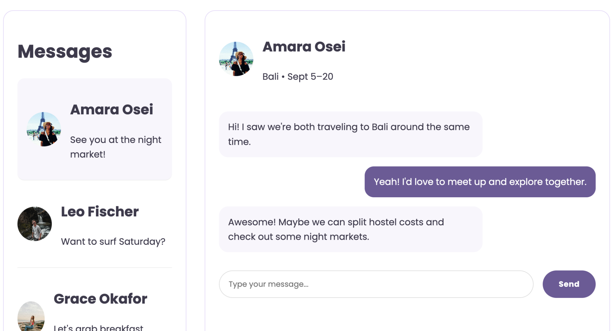
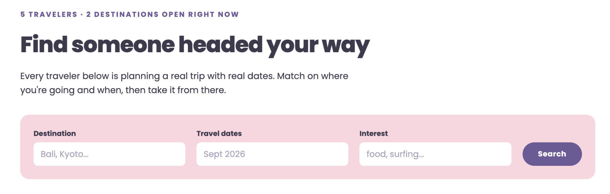
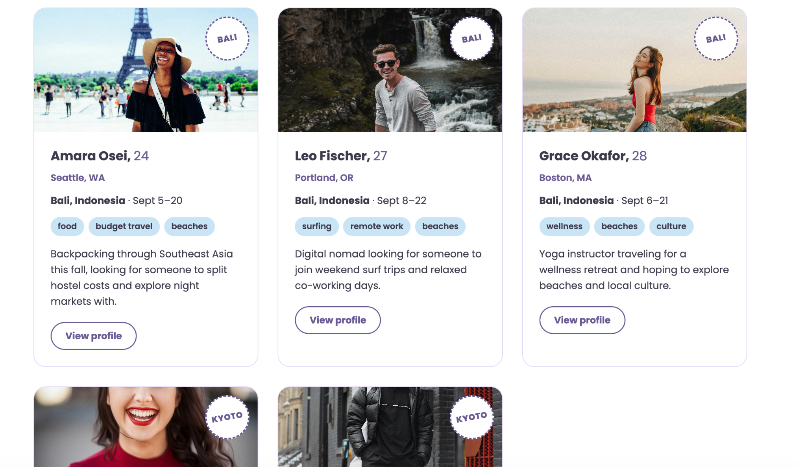
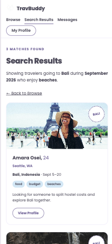

Shared destination.
UX/UI / REACT DEVELOPMENT · 2026
TravBuddy
Travel better, together.
A solo-traveler matching platform centered on shared destinations, overlapping travel dates, and the experiences people want to have.

01 / Challenge
Solo doesn’t have to mean alone
Solo travelers may enjoy independence while still wanting community. Facebook Groups, Meetup, and friendship apps offer ways to connect, but do not prioritize the combination of destination, dates, and travel preferences that makes travel companionship practical.
Overlapping travel dates.
Compatible activities and travel styles.
02 / Audience
A more inclusive way to connect
The concept focuses on solo travelers, especially young adults, while considering different budgets, languages, travel styles, and interests. The goal is to give people control over who they connect with without making personal identity the primary matching signal.
Travelers filter according to their preferences.
Profile information supports informed decisions.
Verification, reporting, and blocking are proposed safeguards.
03 / Experience
Discovery → detail → connection
The core experience lets users browse travelers, compare travel plans, open individual profiles, and move toward messaging. Matching is designed to prioritize destination and dates, with interests and other preferences helping refine results.
Destination, dates, interests, and preferences.
Find people with compatible plans.
Communicate before deciding to meet.
04 / My work
Bringing the interface into React
In the team’s React migration, I worked on navigation and traveler-detail components, added traveler images, refined card styling, and contributed to responsive design, accessibility, routing, and Firebase feedback/error handling.
Improved visual hierarchy and scanability.
More consistent page transitions and mobile behavior.
Clearer responses to Firebase actions.
05 / Roadmap
Built foundation vs. product vision
The team’s broader proposal includes user-submitted itineraries, recommendations, photos, profile verification, and safety controls. Those ideas are presented as planned features unless independently confirmed in the application.
React interface, traveler discovery and detail views, Firebase-connected functionality.
Community itineraries, reviews, and expanded safety features.
06 / Reflection
What I took away
This project connected my UX thinking to real front-end constraints. Making travel information readable, navigation predictable, and interactions understandable mattered as much as implementing the features themselves.
PROJECT GALLERY
Connecting discovery to conversation
Follow the core traveler journey: search for overlapping plans, evaluate potential matches, and start a conversation.



